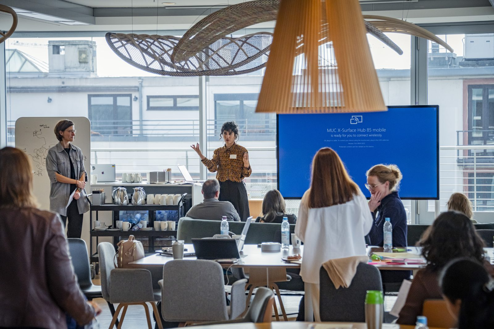
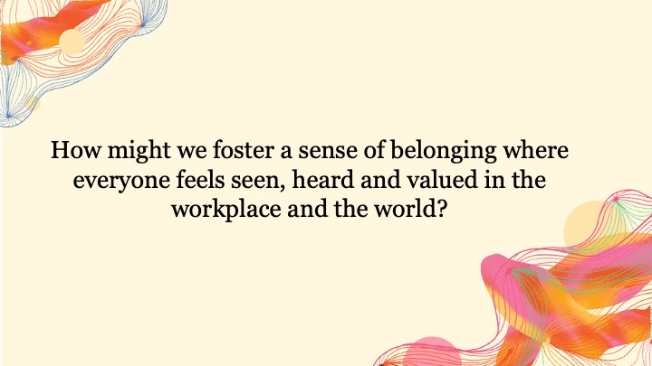
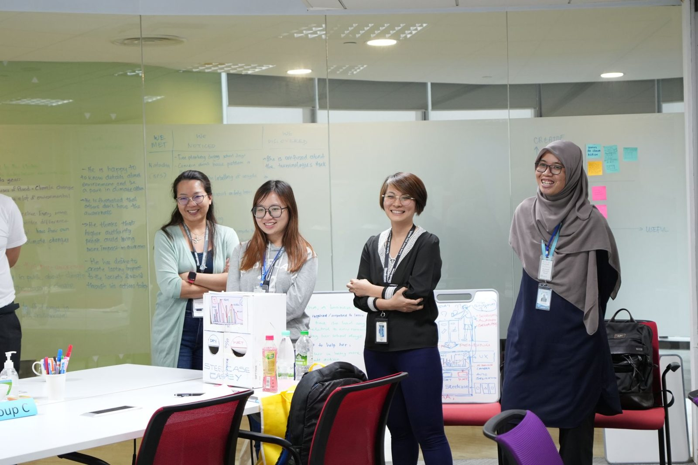

How might we build problem-solving capabilities across Steelcase's global network and use them to tackle pressing social and environmental issues?
I conceptualized, designed, and led the Better Is Possible Design Challenge, a global innovation workshop that brought together employees from offices and plants, clients, and nonprofit partners to work on a pressing challenge, and along the way built human-centered problem-solving capabilities across the network.

I owned the program end to end: concept, design, pilot, evaluation, organizational rollout, and budget. I also managed a cross-functional team of communications and technical staff, facilitators around the world, and external vendors.

I launched the pilot four months after joining Steelcase. As a newcomer, I had to win the support of leaders who barely knew me, and 11 of them agreed to host the pilot at their offices, in cities including Shanghai, Sydney, Grand Rapids, Monterrey, and Cluj. Within a year, the program ran in 15 cities, with 72 organizations and more than 300 participants.

Designing the materials was an exciting challenge, because I was designing for two groups at once. The facilitators needed to feel confident leading the workshop at their office, even though many had never led one before or had never worked with design thinking. The participants came from different backgrounds and needed materials that were easy to follow. And every workshop had to meet the same standard while leaving room for local adaptation.